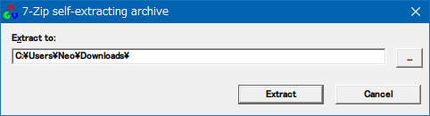
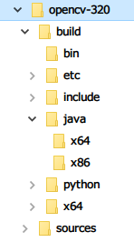

Windows に OpenCV をインストールし JAR ファイルを生成する
以前、MacOS に OpenCV をインストールし、Java アプリで使用するための JAR ファイルを生成する手順を紹介した。
- 過去記事 : 2020-05-13 MacOS に OpenCV をインストールし JAR ファイルを生成する
この時紹介したのはソースコードからビルドする方法で、Ubuntu などの Linux マシンでもほぼ同様の手順でビルド・インストールができる。Linux の場合はネイティブライブラリは libopencv_java320.so というファイルで、MacOS の場合は libopencv_java320.dylib というファイルで出力される。JAR ファイル opencv-320.jar はどちらでも同じモノが出力されているようだった。
で、今回は OpenCV を Windows に導入し、MacOS や Linux で検証したように JAR ファイルを用意して Java アプリに組み込む準備をしてみる。
Windows 向け OpenCV をダウンロードする
OpenCV は、Windows 向けにはビルド済のファイル群をまとめて提供してくれている。以下のサイトよりバージョン別にダウンロードできる。
今回は v3.2.0 をダウンロードした。上の公式ページよりリンクされている、リンク先ページを以下に直接リンクしておく。
- OpenCV - Browse /opencv-win/3.2.0 at SourceForge.net
opencv-3.2.0-vc14.exeをダウンロードする
exe を開き解凍・任意の場所に配置する
ダウンロードした opencv-3.2.0-vc14.exe を開くと、解凍先ディレクトリを問われる。

とりあえずはどこに解凍しておいても良いが、あとでネイティブライブラリファイルへのパスを通す必要があるので、どこか決まった場所に配置した方が良いだろう。

解凍すると上のようなファイルツリーが登場する。
JAR ファイルとネイティブライブラリを確認する
解凍したファイルツリーの中から build/java/ に進むと、opencv-320.jar が存在する。OpenCV を Java アプリで使う時はこの JAR ファイルを依存関係に含めれば良い。
一方、ネイティブライブラリは build/java/x64/ 配下に opencv_java320.dll というファイルで置かれている (32bit 版は x86/ ディレクトリ内)。
アプリ内で OpenCV ライブラリを読み込むには、
import org.opencv.core.Core;
System.loadLibrary(Core.NATIVE_LIBRARY_NAME);
このような実装を加えておき、実行時にネイティブライブラリへのパスを渡してやれば良い。
$ java -Djava.library.path='C:\PATH\TO\opencv\build\java\x64' -jar .\example.jar
ノリはこんな感じ。
ネイティブライブラリへのパス通しには色々な方法があって、
- (上述のように)
javaコマンドでの実行時に-Djava.library.pathオプションで渡す - 環境変数
_JAVA_OPTIONSに-Djava.library.pathオプションを書いておく (非公式な変数) - Windows の場合は環境変数
PATHから検索される - Linux の場合は環境変数
LD_LIBRARY_PATHに書く - Linux の場合は
/etc/ld.so.confに書いて$ ldconfigで反映すれば永続化できる
などなど、いずれかの方法でネイティブライブラリが検索できれば良い。.dll・.so・.dylib ファイルの名前は一定の命名規則に沿って付けられているので、勝手にリネームしてはならない。
ということで今回はココまで。Windows でも OpenCV の準備ができたので、あとはコレを使った Java アプリを作るのみ。
- 参考 : JNIメモ(Hishidama's Java native interface Memo)
- 参考 : 共有ライブラリの追加 - 祈れ、そして働け ～ Ora et labora
- 参考 : JNI、JNAの使い方 - ふなWiki
- 参考 : Javaの使用する環境変数 | GWT Center
- 参考 : EclipseでJava用のOpenCVを使う(for windows) - Qiita
- 参考 : Visual Studio 2017にOpenCV3.2.0とopencv_contribを導入する方法 - Qiita
- 参考 : how to set java library path for processing - Stack Overflow